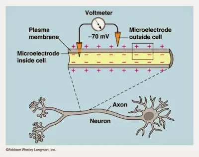
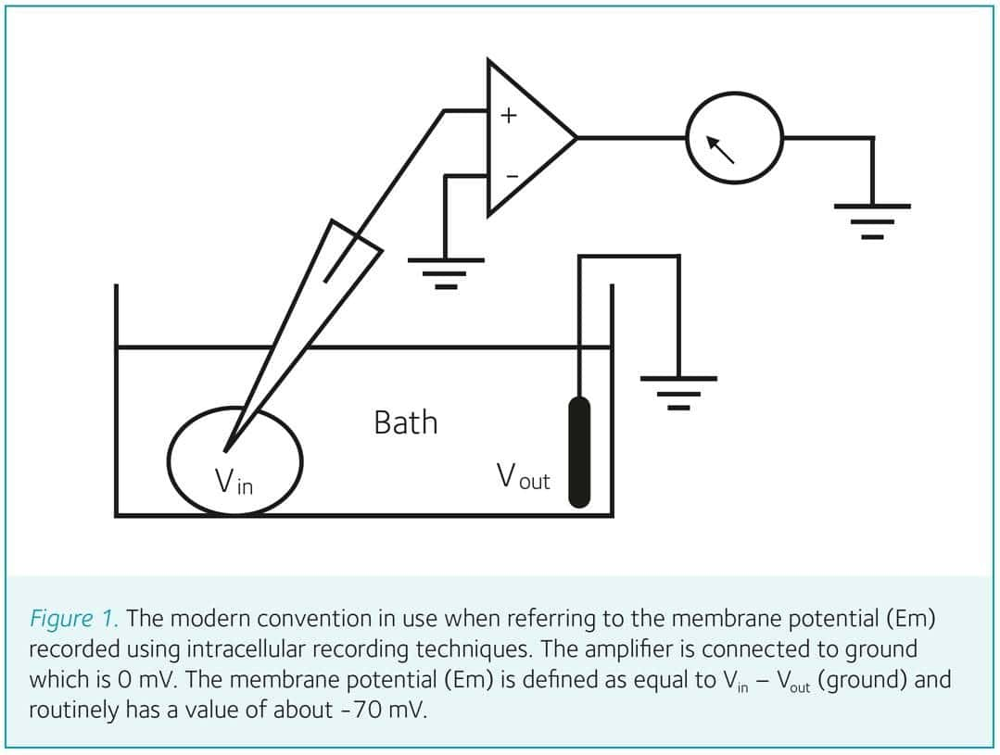
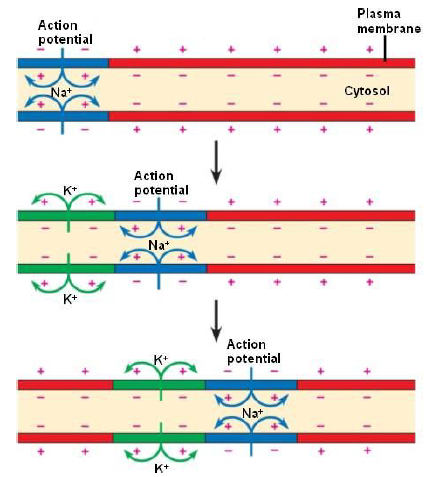
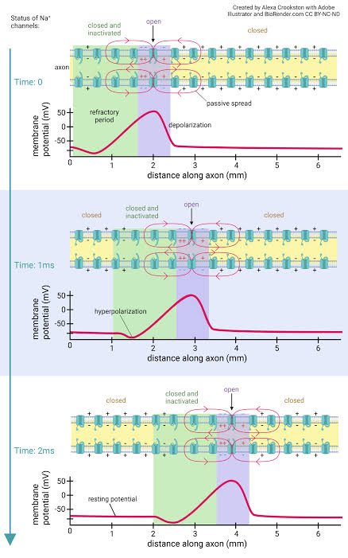
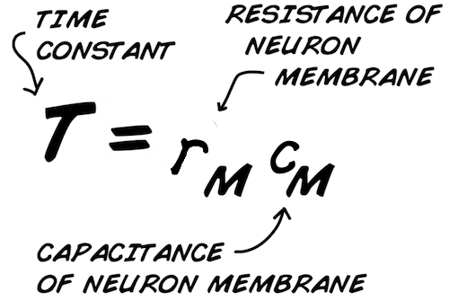

Meet the Neuron and Its Traveling Spike
Question: how does a neuron receive, create, and pass along a signal?
1 · MEET THE PARTS BEFORE THE TERMINOLOGY
A neuron is a living relay with four main regions. Dendrites receive messages from other cells. The soma combines those messages. The axon carries a decision over distance. The axon terminals pass the message to the next cell across a tiny gap called a synapse.
2 · MEASURE THE QUIET CELL BEFORE MAKING IT FIRE
A neuron at rest is already an electrical system. Put one electrode in the cytosol and a reference electrode in the surrounding fluid, and the voltmeter reads roughly −70 mV: the inside is negative relative to the outside. The meter is not detecting a stockpile of electrons. It measures the voltage produced by unequal ion concentrations and selective membrane permeability.


3 · 1.1 NERNST FIRST, THEN 1.2 GHK
Nernst asks about one ion: what voltage would exactly balance that ion's urge to diffuse down its concentration gradient? GHK asks about the real membrane: when several ions can cross at once, where does their permeability-weighted compromise voltage settle?
- $R$ is the gas constant, $T$ is absolute temperature, $F$ is Faraday's constant, and $z$ is ion charge.
- $[ion]_{in}$ and $[ion]_{out}$ are concentrations; $P_{ion}$ says how easily that ion crosses the membrane.
- Typical values put $E_K$ near $-90\text{ mV}$ and $E_{Na}$ near $+60\text{ mV}$. At rest, $P_K\gg P_{Na}$, so $V_m$ sits much closer to potassium's value.
- Opening sodium channels changes $P_{Na}$, so GHK predicts the voltage moving toward $E_{Na}$. That is the chemical reason the rising phase can happen.
Analogy: Nernst gives each ion its preferred thermostat setting. GHK combines the settings using how open each ion's door is. The most open door gets the strongest vote. Full numerical examples appear in the detailed biophysics reference.
4 · HOW AN ACTION POTENTIAL STARTS AND PROPAGATES
At rest, the inside of the neuron is electrically negative relative to the outside. Incoming signals slightly raise or lower that voltage. If the axon hillock reaches threshold, nearby sodium channels open and positive sodium ions enter. That patch of membrane becomes positive, which pushes the next patch to threshold. The process repeats down the axon like a line of falling dominoes.
- Rest: ion pumps and leak channels maintain concentration gradients and a negative resting voltage.
- Threshold: enough excitatory input depolarizes the trigger region.
- Rising phase: voltage-gated sodium channels open; sodium enters rapidly.
- Reset: sodium channels inactivate and potassium channels open; potassium leaving restores negative voltage.
- Forward travel: the active patch triggers its neighbor while the refractory patch behind it cannot immediately fire again, encouraging one-way propagation.
- Synaptic hand-off: arrival at the terminal opens calcium channels, causing neurotransmitter release toward the next neuron.
In myelinated axons, the spike is regenerated mainly at gaps called nodes of Ranvier, so it appears to jump from node to node. This saltatory conduction is faster and more energy-efficient than regenerating continuously along every micrometre.
Connection to SNNs: a spiking neural network usually keeps the event—“this neuron fired at this time”—but does not simulate sodium ions physically traveling through the model. Later chapters show exactly which biological details are retained and which are compressed.
Watch the local channel sequence become a traveling wave
The diagrams move from a simple ion-level story to a millisecond-by-millisecond account. A spike travels because each patch of membrane excites the next one; the same ions do not race from the soma to the terminal.



Scrub Through Na⁺ Influx, K⁺ Efflux, and Propagation
Drag the spike phase manually or play it. The membrane cross-section shows which ions cross; the axon strip shows the active front and refractory wake moving from segment to segment.
Scrub from rest through sodium-driven rise, potassium-driven recovery, and forward propagation.
Higher sodium conductance makes the regenerative upstroke steeper and more positive.
Higher potassium conductance strengthens repolarization and the after-hyperpolarization.
This widget is a qualitative gate-and-propagation model, not a numerical Hodgkin–Huxley solver. Its job is to make direction, timing, and regeneration visible before the full differential equations.
Lab 1 · Charge, Fire, Propagate, Recover
Change current and membrane time constant, then stimulate the neuron. The left plot shows RC charging and decay; the right side shows the spike regenerating along the axon.
With $R_m=10\text{ M}\Omega$, each nanoampere raises the steady-state target by about $10\text{ mV}$.
Small $\tau_m$ charges and forgets quickly. Large $\tau_m$ keeps recent input for longer.
Before threshold, the membrane behaves like the circuit in Figure 3. Current charges capacitance through membrane resistance:
$V(t)=V_\infty+(V_0-V_\infty)e^{-t/\tau_m}$
With input removed, stored charge leaks away exponentially rather than vanishing instantly:
The RC circuit explains the gradual curve. It cannot create the sharp spike. Hodgkin and Huxley showed that voltage-dependent sodium current supplies regenerative rise, while potassium current supplies recovery.
Try this: lower the current below threshold and watch the membrane charge and decay without firing. Then increase $\tau_m$: the same neuron remembers the input longer. Turn myelin off to compare continuous regeneration with node-to-node propagation.
5 · READ LAB 1 LIKE AN ELECTRICAL ENGINEER
The passive membrane is a parallel RC network. The lipid bilayer is the capacitor $C_m$. Open resting channels form a leak conductance $g_L=1/R_m$. The leak reversal potential $E_L$ behaves like a battery in series with the leak branch. Kirchhoff's current law says the injected current must split between charging the capacitor and flowing through the resistor.

What those terms mean on a bench
- High $R_m$: less current escapes, larger voltage gain $\Delta V=I R_m$, and longer memory.
- High $C_m$: more charge $Q=C_mV$ is required to change voltage, so the response is slower.
- Low-pass behavior: slow inputs pass; very fast fluctuations are attenuated because the capacitor cannot change voltage instantly.
- Active spike: voltage-gated conductances make the circuit nonlinear. Past threshold, sodium positive feedback overwhelms the passive RC prediction.
Concrete example: $R_m=10\text{ M}\Omega$ and $C_m=1\text{ nF}$ give $\tau_m=10\text{ ms}$ and $f_c\approx15.9\text{ Hz}$. A $2\text{ nA}$ DC input targets a $20\text{ mV}$ shift, but after $10\text{ ms}$ the membrane has moved only $12.6\text{ mV}$ toward it.
Change Resistance and Capacitance, Then Apply a Current Step
The circuit and voltage trace update together. Watch how resistance controls gain while the product of resistance and capacitance controls response speed.
Higher resistance means less leak and a larger steady voltage change for the same current.
Higher capacitance stores more charge and slows the response.
6 · FROM ONE NEURON TO A BRAIN
One spike means very little by itself. Brains use networks: some neurons excite their neighbors, others inhibit them, and each cell receives signals from many sources. Meaning appears in patterns across a population—which neurons fire, how often they fire, and in what order. Connections also change with experience, allowing the network to learn. SNNs borrow this network idea while replacing living cells with mathematical state variables and timed events.
7 · 📜 THE HODGKIN–HUXLEY QUESTION
In the 1930s and 1940s, Alan Hodgkin and Andrew Huxley wanted to identify the mechanism behind this traveling spike. They used the giant axon of the squid, whose unusual width allowed electrodes to be inserted with the equipment of the era. By controlling membrane voltage and measuring the resulting currents, they could separate the fast inward sodium current from the slower outward potassium current.
8 · The experiment and the first model
Follow the evidence in the same order the researchers encountered it: apparatus, measured response, then the simplest circuit that could explain the response.


9 · 🔎 WHAT THEY FOUND—and what you are looking at
The membrane does two jobs at once. Its lipid layer stores separated charge; selective channels let particular ions cross. Hodgkin and Huxley separated a fast inward sodium current from a slower outward potassium current. Sodium drives the rising edge of a spike, potassium helps bring voltage back down, and a smaller leak current is always present. Figure 2 reveals storage; Figure 3 turns that observation into components; the full model lets those channel conductances open and close over time.
10 · 💡 THE ELI14 / PLAIN-ENGLISH MODEL
A neuron is a battery behind a leaky dam. Ion concentration differences are stored water pressure. The membrane is the dam, and channels are automatic floodgates. Sodium gates open quickly and start the surge; potassium gates answer more slowly and restore order. The spike is therefore a timed hand-off between two gate systems—not a mysterious bolt of biological lightning.
11 · ⚖️ THE ENGINEERING TRADE-OFF
FLOP counts are order-of-magnitude teaching estimates, not hardware benchmarks. Solver, timestep, channel count, precision, and implementation can move them dramatically.
12 · 🧮 THE MATHEMATICAL MODEL
The Nernst equation gives one ion's balancing voltage. Hodgkin–Huxley adds the time-varying conductances inferred from the experiment:
- $C_m$ is the charge-storage capacity exposed by Figure 2; $V_m$ is the voltage being recorded.
- $I_{app}$ is the controlled intervention; $\bar g_{Na},\bar g_K,g_L$ are maximum channel conductances.
- $E_{Na},E_K,E_L$ are the voltages toward which each current pulls.
- $m,h,n$ are gate-state variables: sodium activation, sodium inactivation, and potassium activation.
The celebrated hand-calculation story exposes the price of realism: even one axon demanded months of numerical labor with a hand-cranked calculator. The model still omits dendritic geometry, metabolism, glia, molecular noise, and many channel variants.